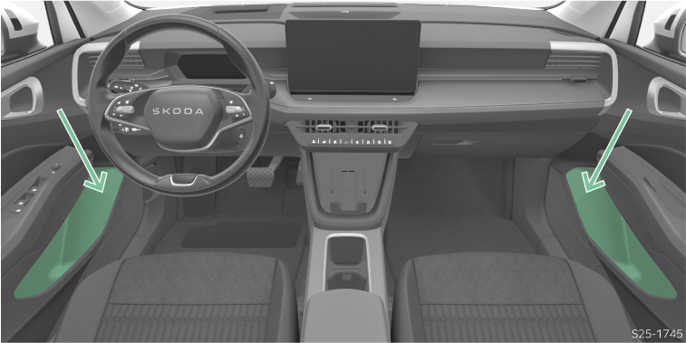

<!-- topicId: ae32784e24f6cd62d80b910ec8120995_1_fr_FR | type: topic -->
<h1>Vue d’ensemble</h1>
<html data-dyxml-version="2"><div lang="fr-FR"><div class="topic-content"><section data-type="topic-allgemein" data-dl-contains="block" id="ID_483249c97b972b0cac1445252ae7ac38-69f03eb001782b53ac1445256839a829-fr-FR"><p id="ID_61d446ba7b972b0cac1445256d37f547-69f03eb001782b53ac1445256839a829-fr-FR"></p><div data-role="block" data-type="block" id="ID_f54fdd007b972b0cac1445252a8ff77a-69f03eb001782b53ac1445256839a829-fr-FR" hasIllu="true"><div data-type="illu" id="ID_60fea24db62911f08d14cca8f6b8798d-69f03eb001782b53ac1445256839a829-fr-FR"><div data-class="vw-layout-narrow" data-dl-wrapper="figure" id="d6266482e34"><figure id="ID_589215b10cf31d00ac144525392a1f1d-69f03eb001782b53ac1445256839a829-fr-FR" data-role="" data-type="" data-position=""><div><a data-fancybox="group" media-link="" class="fancybox" data-href="../media/imgf626fb83ca81c451ac1445251ca389d0_1_--_--_PNG_3x.png" data-options="{&#34;buttons&#34;:[&#34;fullScreen&#34;, &#34;thumbs&#34;, &#34;close&#34;],&#34;hash&#34;:false}"></img></a></div></figure></div></div><p data-type="p" id="ID_92a117384e5811e9a3149cba1c7acd66-69f03eb001782b53ac1445256839a829-fr-FR">L’étagère est prévue pour ranger der bouteilles avec un contenu max. de 1,5 l.</p></div><div></div></section></div></div></html>